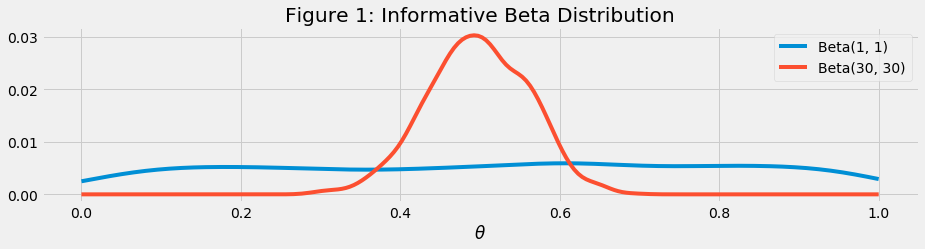
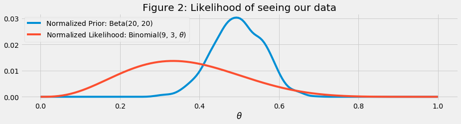
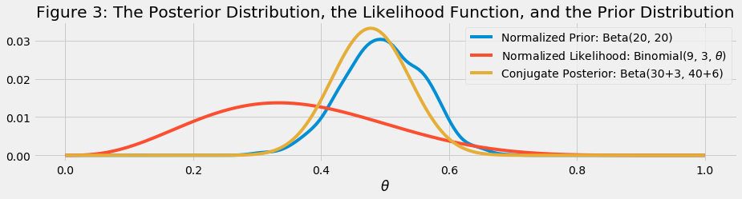
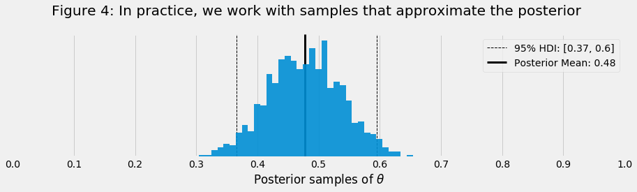

In this blog post, I will give you a relatively nontechnical introduction to Bayesian statistics. Bayesian methods are getting more and more popular and there are many tools out there to apply it. In this example, we'll use a computationally simple example to pin down concepts and jargon. In a follow-up post, I will introduce the basics of Markov chain Monte Carlo (MCMC) and the Metropolis–Hastings algorithm to solve more complex problems.
import numpy as np
import scipy.stats as stats
import matplotlib.pyplot as plt
plt.style.use('fivethirtyeight')
Bayesian Statistics
Many of us were trained using a frequentist approach to statistics where parameters are treated as fixed but unknown quantities. In this paradigm, we estimate parameters using samples from a population. New samples give us new estimates, hopefully centered around the true value. The distribution of these different estimates is called the sampling distribution, and it quantifies the uncertainty of our estimate. Importantly, though, the parameter itself is still considered fixed.
The Bayesian approach is a different way of thinking about statistics. Parameters are treated as random variables and described with probability distributions. The distribtion tells us our belief about specific values of the parameters.
To introduce these concepts and build intuition, we'll work through a cannonical coin toss example. We'll use $\theta$ to denote the probability of getting heads, $1$, and $(1-\theta)$ will refer to the probability of getting tails, $0$.
So, lets formalize the first step in our analysis. Lets formally define the model we are interested in fitting. For us, that is pretty simple:
\begin{align}
is_head_i \sim Bernoulli(\theta) \\\
\theta \sim Beta(20, 20)
\end{align}
All we are saying here is that each coin flip is a bernoulli draw where the probability of getting heads is defined by the value of $\theta$. To complete our analysis, we'll need to define a prior for $\theta$, condition the model on some data, then examine the posterior distribution.
Prior distributions
The second line of our model is the prior distribution we chose for the parameter $\theta$. A prior distribution is just a mathematical expression that defines our belief about the distribution of the parameter.
The prior can be based on what we know about the physical world, assumptions about our model, or previous experience. Common sense would suggest that the probability of heads is closer to 0.5, and I could express this belief mathematically by specifying parameters of my beta distribution. Figure 1 below shows a beta distribution with parameters 20 and 20 and compares it against a complete flat prior with parameters 1 and 1.
prior_beta_uninformative = stats.beta.rvs(1, 1, size = 1000)
density = stats.gaussian_kde(prior_beta_uninformative)
x = np.linspace(0,1,200)
y_uninformative = density(x) / density(x).sum(axis=0,keepdims=1)
prior_beta_informative = stats.beta.rvs(30,30, size = 1000)
density = stats.gaussian_kde(prior_beta_informative)
y_informative = density(x) / density(x).sum(axis = 0, keepdims = 1)
fig, ax = plt.subplots(figsize=(14,3))
ax.plot(x, y, label="Beta(1, 1)")
ax.plot(x, y_informative, label="Beta(30, 30)")
ax.set_title("Figure 1: Informative Beta Distribution")
ax.set_xlabel("$\\theta$")
ax.legend()
plt.viridis()
plt.show()

A beta(1,1) distribution is called uninformative because all values of the parameter have equal probability. Figure 1 is called an informative prior because all values of the parameter do not have equal probability. Setting priors may seem tricky at first, but in practice there is almost always a prior.
Even non-Bayesian procedures are improved by introducing devices that resemble priors, because these devices reduce overfitting. Overfitting here just means learning too much from a sample. Statisticians have introduced procedures for regularizing inference which is in fact mathematically equivalent to using prior information that down-weights extreme parameter values. Penalized likelihood is the best known example. This is equivalent to a prior distribution that is less than perfectly flat. We can always do better than to use a flat prior. Any prior that is slightly less flat will be an improvement.
Of course if the prior is too concentrated in the wrong place, then it will hurt inference. But there is a universe of prior distributions that beat the flat prior implied by classical statistical methods. And that is why non-Bayesian statisticians use regularizing procedures that achieve the same advantages as prior information.
You can read more about the dangers of uninformative priors here.
Likelihood functions
The next step in our analysis is to collect data and define a likelihood function. Let’s say that I toss the coin 9 times and observe 3 heads.
obs_coin_flips = np.array([1]*3 + [0]*6)
obs_coin_flips
array([1, 1, 1, 0, 0, 0, 0, 0, 0])
This is the first line in the model we specified. It defines the likelihood function in our model. The binomial probability distribution is often used to quantify the probability of the number of successes out of a fixed number of trials.
The blue line in figure 2 shows a binomial likelihood function for $\theta$ given 3 heads out of 9 coin tosses. The y-axis is rescaled so that the area under the curve equals one. This allows us to compare the likelihood function with the prior distribution.
# Calculate binomial likelihood of seeing our
# data for 200 points between 0 and 1.
x_pdf = np.linspace(0,1,200)
y_pdf = stats.binom.pmf(3, 9, x_pdf)
density = stats.gaussian_kde(prior_beta_informative)
# Normalize y-axis to 1
y_prior = density(x_pdf)/density(x_pdf).sum(axis=0,keepdims=1)
y_pdf = y_pdf / y_pdf.sum(axis=0, keepdims=1)
# Overlay densitites
fig, ax = plt.subplots(figsize=(14,3))
ax.plot(x_pdf, y_prior, label = "Normalized Prior: Beta(20, 20)")
ax.plot(x_pdf, y_pdf, label = "Normalized Likelihood: Binomial(9, 3, $\\theta$)")
ax.set_title("Figure 2: Likelihood of seeing our data")
ax.set_xlabel("$\\theta$")
ax.legend(loc = "upper left")
plt.show()

Posterior distributions
The fourth step in our analysis is to calculate a posterior distribution. This distribution represents a reallocation of our beleif away from the prior and towards what we saw in our coin flippling experiment.
In really simple cases, we can actually compute a posterior distribution by multiplying the prior distribution and the likelihood function. Technically, the posterior is proportional to the product of the prior and the likelihood, but let’s keep things simple for now.
\begin{align}
Posterior & = Prior∗Likelihood \\\
P(\theta|y) &= P(\theta)∗P(y|\theta) \\\
P(\theta|y)&=Beta(\alpha,\beta)∗Binomial(n,y,\theta) \\\
P(\theta|𝑦)&=Beta(y+\alpha,n-y+\beta)
\end{align}
The beta distribution is known as a “conjugate prior” for the binomial likelihood. This just means that when multiplied together we get another distribution that is analytically tractible. The posterior distribution belongs to the same distribution family as the prior distribution. Both the prior and the posterior have beta distributions.
Figure 3 shows the posterior distribution of theta with the prior distribution and the likelihood function.
x = np.linspace(0,1,200)
y_likelihood = stats.binom.pmf(3,9, x_pdf)
density_prior = stats.gaussian_kde(prior_beta_informative)
y_posterior = stats.beta.pdf(x, 3+30, 9-3+30)
# Normalize y-axis to 1
y_prior_norm = density_prior(x)/density_prior(x).sum(axis=0, keepdims=1)
y_likelihood_norm = y_likelihood / y_likelihood.sum(axis=0, keepdims=1)
y_posterior_norm = y_posterior / y_posterior.sum(axis=0, keepdims=1)
# Overlay densitites
fig, ax = plt.subplots(figsize=(14,3))
ax.plot(x, y_prior_norm, label = "Normalized Prior: Beta(20, 20)")
ax.plot(x, y_likelihood_norm, label = "Normalized Likelihood: Binomial(9, 3, $\\theta$)")
ax.plot(x, y_posterior_norm, label = "Conjugate Posterior: Beta(30+3, 40+6)")
ax.set_xlabel("$\\theta$")
ax.set_title("Figure 3: The Posterior Distribution, the Likelihood Function, and the Prior Distribution")
plt.legend()
plt.show()

Notice that the posterior closely resembles the prior distribution. This is because we used an informative prior and a relatively small sample size. If we had used a completely uninformative prior like Beta(1,1), we would see the likelihood completely dominate the data. In practice, this means that we can reduce the standard deviation of the posterior distribution using smaller sample sizes when we use more informative priors. But a similar reduction in the standard deviation may require a larger sample size when we use a weak or uninformative prior.
Using the posterior
After we calculate the posterior distribution, we can calculate the mean or median of the posterior distribution, a 95% equal tail credible interval, the probability that $\theta$ lies within an interval, and many other statistics.
"""
This code was taken form the PyMC library https://github.com/pymc-devs/pymc
"""
def calc_min_interval(x, alpha):
"""Internal method to determine the minimum interval of a given width
Assumes that x is sorted numpy array.
"""
n = len(x)
cred_mass = 1.0-alpha
interval_idx_inc = int(np.floor(cred_mass*n))
n_intervals = n - interval_idx_inc
interval_width = x[interval_idx_inc:] - x[:n_intervals]
if len(interval_width) == 0:
raise ValueError('Too few elements for interval calculation')
min_idx = np.argmin(interval_width)
hdi_min = x[min_idx]
hdi_max = x[min_idx+interval_idx_inc]
return hdi_min, hdi_max
def hpd(x, alpha=0.05):
"""Calculate highest posterior density (HPD) of array for given alpha.
The HPD is the minimum width Bayesian credible interval (BCI).
:Arguments:
x : Numpy array
An array containing MCMC samples
alpha : float
Desired probability of type I error (defaults to 0.05)
"""
# Make a copy of trace
x = x.copy()
# For multivariate node
if x.ndim > 1:
# Transpose first, then sort
tx = np.transpose(x, list(range(x.ndim))[1:]+[0])
dims = np.shape(tx)
# Container list for intervals
intervals = np.resize(0.0, dims[:-1]+(2,))
for index in make_indices(dims[:-1]):
try:
index = tuple(index)
except TypeError:
pass
# Sort trace
sx = np.sort(tx[index])
# Append to list
intervals[index] = calc_min_interval(sx, alpha)
# Transpose back before returning
return np.array(intervals)
else:
# Sort univariate node
sx = np.sort(x)
return np.array(calc_min_interval(sx, alpha))
# Sample from the posterior
posterior_samples = stats.beta.rvs(3+30, 9-3+30, size = 1000)
post_lims = hpd(posterior_samples)
post_mean = np.mean(posterior_samples)
fig, ax = plt.subplots(figsize=(14,3))
ax.axvline(post_lims[0], color = "black", linestyle="--", lw=1, zorder=5)
ax.axvline(post_lims[1], color = "black", linestyle="--", lw=1, zorder=5,
label=f"95% HDI: [{round(post_lims[0],2)}, {round(post_lims[1],2)}]")
ax.axvline(post_mean, color = "black", linestyle="-", lw=3, zorder=5,
label=f"Posterior Mean: {round(post_mean,2)}")
ax.hist(posterior_samples, bins = 35, zorder=10, alpha = .9)
ax.set_xticks(np.linspace(0, 1, 11))
ax.get_yaxis().set_visible(False)
ax.set_xlabel("Posterior samples of $\\theta$")
ax.set_title("Figure 4: In practice, we work with samples that approximate the posterior \n")
plt.legend()
plt.show()

Why use Bayesian statistics?
There are many appealing features of the Bayesian approach to statistics. Perhaps the most appealing feature is that the posterior distribution from a previous study can often serve as the prior distribution for subsequent studies. For example, we might conduct a small pilot study using an uninformative prior distribution and use the posterior distribution from the pilot study as the prior distribution for the main study. This approach would increase the precision of the main study.
Summary
In this post, we focused on the concepts and jargon of Bayesian statistics and worked a simple coin flipping example. In this example, we were able to analytically solve for the posterior distribution's probability density function because the beta distribution is a conjugate prior for the binomial distribution. In most real world problems, we can't do this and instead we rely on numerical optimization methods known as MCMC to explore the parameter space and determine its posterior. Next time, we'll illustrate this by exploring MCMC and the Metropolis–Hastings algorithm.